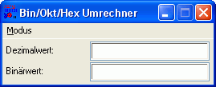
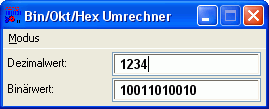

Entwicklung einer Beispielanwendung
Um einmal die Implementierung einer kleinen, kompletten Anwendung, welche mit einem benutzerdefinierten Dialogfenster arbeitet, zu demonstieren, werden wir in diesem Kapitel einen Zahlensysteme-Rechner programmieren. Dieser "Bin/Okt/Hex Umrechner", wie ich ihn nenne, soll Dezimalzahlen in Binärzahlen, Oktalzahlen und Hexadezimalzahlen und umgekehrt umrechnen können.
Zur Berechnung der Zahlensysteme verwenden wir die Funktionen "base_to_decimal" und "decimal_to_base" aus der Bibliothek MATH.RB, da der Hauptschwerpunkt dieses Beispiels nicht beim Umrechnen der Zahlen, sondern beim Umgang mit den Dialogwidgets liegt.
Vorab aber trotzdem ein wenig Theorie am Beispiel der Umrechnung vom Dezimalzahlensystem in das Binärzahlensystem. Das Dezimalzahlensystem verwenden wir in unserem täglichen Gebrauch von Zahlen. Dezimalzahlen bestehen daher aus Ziffernfolgen von 0-9, sind also zur Basis 10 gehalten. Das Binärzahlensystem kennt nur zwei Ziffern, 0 und 1, und ist zur Basis 2 gehalten (daher auch manchmal der Begriff "Dualzahlensystem"). Auf niederigster Ebene besteht jedes Programm, jedes Zeichen und jeder Wert, der mit oder von einem Computer verarbeitet wird, aus Millionen solcher Folgen wie z.B. "10011010010", was in dezimaler Schreibweise dem Wert "1234" entspricht. Errechnen lässt sich dieser binäre Wert recht simpel, indem man den Ausgangswert 1234 jeweils durch die Basis des Zahlensystems teilt, bei Dualzahlen jeweils durch 2. Erhält man einen Restwert mit Nachkommastelle, so wird eine 1 als Ziffer gesetzt, andernfalls eine 0. Kommt letztendlich als Restwert 0 heraus, ist die Zahl vollständig ins andere Zahlensystem übertragen (nachdem man sie noch einmal umgedreht hat (da die berechnete Zahl von rechts nach links aufgebaut wird)).
Unser Konvertierungsprogramm soll nun wie folgt aufgebaut werden: Ein Dialogfenster mit zwei Eingabefeldern, wobei das obere für die Aus- und Eingabe von Dezimalzahlen und das untere für die Aus- und Eingabe von Zahlen im jeweiligem Zahlensystem verwendet wird. In welches Zahlensystem umgerechnet wird, wird über ein Menü im Dialogfenster festgelegt, bei dem der jeweils aktuelle Umrechnungsmodus mit einem Häckchen markiert wird. Hier kann der Benutzer den Umrechnungsmodus wechseln. Das Programm soll jeweils vom Dezimal- ins eingestellte Zahlensystem als auch vom eingestellten Zahlensystem ins Dezimalsystem konvertieren können. Die Konvertierung soll "live" bereits während der Eingabe automatisch im jeweils umgekehrten Eingabefeld durchgeführt werden.
Diese ganzen Anforderungen an unser Programm stellen aber mit RapidBATCH gar kein Problem dar. In nicht mehr als 10 Minuten und einer Scriptlänge von etwa 120 Zeilen (inklusive entsprechender Kommentare und Leerzeilen) ist das komplette Programm fertig und lauffähig, wenn man bereits die entsprechende Erfahrung hat.
Im ersten Schritt bei der Entwicklung dieses Scripts entwerfen wir einen Prototypen. Ein Prototyp ist eine programmierte und lauffähige Version der Eingabemaske, jedoch ohne jegliche Funktionalität. Solch ein Prototyp ist auch eine bewährte Methode, die Widgets auf dem Fenster so anzuordnen, dass die Oberfläche auch ergonomisch und einheitlich aussieht.
rem **************************************
rem ** Prototyp "Bin/Okt/Hex Umrechner" **
rem **************************************
rem --- Erzeugen und Aufsetzen des Hauptfensters ---
newdialog 'umrechner', 'dialog', '1|1|270|100'
rem Fenstertitel und Style setzen
letdialog 'umrechner', 'caption', 'Bin/Okt/Hex Umrechner'
letdialog 'umrechner', 'style', 'single'
rem Menübaum erzeugen
[menü] # '&Modus:Dezimal -> &Binär|Dezimal -> &Oktal|Dezimal -> &Hexadezimal;;'
letdialog 'umrechner', 'menu', [menü]
rem --- Erzeugung von Eingabefeldern und Labels ---
rem Label und Eingabefeld für Dezimalzahl
newdialog 'umrechner:l_dezimal', 'label', '5|8|100|22'
letdialog 'umrechner:l_dezimal', 'caption', 'Dezimalwert:'
newdialog 'umrechner:dezimal', 'input', '110|4|150|25'
letdialog 'umrechner:dezimal', 'font', 'Sans Serif|10|2'
rem Label und Eingabefeld für Zahl des jew. Zahlensystems
newdialog 'umrechner:l_konvert', 'label', '5|34|100|22'
letdialog 'umrechner:l_konvert', 'caption', 'Binärwert:'
newdialog 'umrechner:konvert', 'input', '110|30|150|25'
letdialog 'umrechner:konvert', 'font', 'Sans Serif|10|2'
rem Fenster sichtbar machen
letdialog 'umrechner', 'visible', [true]
rem Warten auf Ereignis (ohne Ereignisbehandlung)
rundialog [null] = '0'
end

Der bereits lauffähige Prototyp unseres Bin/Okt/Hex Umrechners
Wir werden nun Schritt-für-Schritt die einzelnen Abschnitte, in die der Prototyp eingeteilt ist, durchgehen.
Zuerst wird das Dialog-Basisfenster erzeugt mit eine Gröfle von 270x100 Pixel. In den darauf folgenden LETDIALOG-Anweisungen wird zuerst der Fenstertitel und anschlieflend ein so genannter Style, in unserem Fall der Style "SINGLE" für das Fenster gesetzt. Dieser Style ändert das Aussehen des Fensters, so dass kein Maximieren-Button mehr in der rechten oberen Ecke gegeben ist (da eine Maximierung des Fensters bei diesem kleinen Programm keinen Sinn ergibt). Andere Stylewerte können Sie der RapidBATCH-Sprachreferenz entnehmen.
Nachdem das Fensterstyle gesetzt wurde, weisen wir dem Fenster noch ein Menü zu. Dieses Menü wird als so genannter "Menu-Descriptor" übergeben. Dieser Descriptor definiert das Menü in einer einfachen Definitionssprache. In unserem Fall wird ein Hauptmenü "Modus" mit drei Untermenüpunkten ("Dezimal -> Binär", "Dezimal -> Oktal" und "Dezimal -> Hexadezimal") erzeugt. Mehr Informationen zum MENU-Attribut von LETDIALOG können Sie ebenfalls der Sprachreferenz entnehmen.
Im zweiten Abschnitt des Scripts erzeugen wir vier weitere Widgets, jeweils zwei Eingabefelder und zwei statische Texte, welche als Bezeichnungsfelder vor den Eingabefeldern angezeigt werden. Für die Eingabefelder setzen wir durch Verwendung des FONT-Attributes über LETDIALOG eine alternative Schriftart, hier "Sans Serif", 10 Punkt, Fett.
Auf Basis dieses Prototypen implementieren wir nun die Funktionalitäten zu unserem Programm.
Als erstes importieren wir die RapidBATCH Bibliotheken MATH.RB, welche die Konvertierungsfunktionen "decimal_to_base" und "base_to_decimal" bereitstellt, sowie die DIALOG.RB, welche ein paar nützliche Prozeduren beinhaltet, wie z.B. die Prozedur "centerdialog", die ein Dialogfenster auf dem Bildschirm zentriert. Das Importieren der Bibliotheken erfolgt als aller erstes im Programm mit Hilfe der INCLUDE-Anweisung.
rem --- Importieren von Bibliotheks-Hilfsfunktionen ---
include 'math.rb'
include 'dialog.rb'
Da die Funktionen decimal_to_base und base_to_decimal jeweils als zweiten Parameter einen String mit allen Ziffern des jeweiligen Zahlensystems erwarten (wobei die Anzahl der Ziffern gleichzeitig die Basis des Zahlensystems, in welches umgerechnet werden soll, definiert), deklarieren und füllen wir ebenfalls am Anfang unseres Prototypen-Programms entsprechende Variablen, die jeweils die Ziffern aller drei Zahlensysteme (Binär "01", Oktal "01234567" und Hexadezimal "0123456789ABCDEF") beinhalten. Eine Variable [aktuelle_basis] verwenden wir später, um die jeweils aktuell umzurechnende Basis für das Umrechnungsprogramm zu setzen.
rem --- Globale Variablen (Basen und Ziffern der Zahlensysteme) ---
dec [bin], [okt], [hex], [aktuelle_basis]
rem Basis: 2 (Binärsystem)
[bin] = '01'
rem Basis: 8 (Oktalsystem)
[okt] = '01234567'
rem Basis: 16 (Hexadezimalsystem)
[hex] = '0123456789ABCDEF'
Bevor wir nun eine entsprechende Ereignisbehandlung für das Menü sowie die Eingabe und Umrechnung der Werte implementieren, programmieren wir zuerst zwei Prozeduren, um die Werte jeweils von Dezimal in das entsprechende Konvertierungssystem oder vom Konvertierungssystem in Dezimal umzurechnen. Der Einfachheit halber heiflen diese Prozeduren berechne_Zielwert und berechne_Dezimalwert. Im Falle eines Fehlers (z.B. wenn eine ungültige Ziffer gefunden wurde) geben beide Umrechnungsfunktionen (base_to_decimal, decimal_to_base) den Wert '-1' zurück. Hier schreiben wir in das jeweilige Feld den Wert "Fehleingabe", um den Benutzer zu informieren, dass er einen ungültigen Wert umzurechnen versucht.
rem --- Implementation der Prozedur "berechne_Zielwert" ---
proc berechne_Zielwert
dec [dezimal], [konvert]
rem Zahlensystemwert aus Dezimalwert errechnen
getdialog [dezimal] = 'umrechner:dezimal', 'text'
if [dezimal] ! ''
rem Wert berechnen (mit der decimal_to_base-Bibliotheksfunktion)
decimal_to_base [konvert] = [dezimal], [aktuelle_basis]
if [konvert] = '-1' [konvert] = 'Fehleingabe'
endif
letdialog 'umrechner:konvert', 'text', [konvert]
endproc
rem --- Implementation der Prozedur "berechne_Dezimalwert" ---
proc berechne_Dezimalwert
dec [dezimal], [konvert]
rem Dezimalwert aus Zahlensystemwert errechnen
getdialog [konvert] = 'umrechner:konvert', 'text'
if [konvert] ! ''
rem Wert berechnen (mit der base_to_decimal-Bibliotheksfunktion)
base_to_decimal [dezimal] = [konvert], [aktuelle_basis]
if [dezimal] = '-1' [dezimal] = 'Fehleingabe'
endif
letdialog 'umrechner:dezimal', 'text', [dezimal]
endproc
Bevor wir uns auch noch die Mühe machen und später in der Ereignisbehandlung drei mal dasselbe (für jeden Umrechnungsfall, den man im Menü setzen kann) programmieren, entwickeln wir noch eine weitere Prozedur setze_Zahlensystem, der wir als Parameter eine der drei Zahlensystemdefinitionen, die wir zuvor in einer der Variablen gespeichert haben, zuweisen. Diese Prozedur entfernt zugleich alle Häckchen aus dem Menü und setzt anschlieflend für den jeweils korrekten Menüpunkt das Häckchen erneut. Das Setzen eines Häckchens für einen Menüpunkt erfolgt über das bei der Menüzuweisung automatisch generierte Menülabel, welches im Format "Dialogname:Menu_Menüpunkttext" generiert wird, und dem CHECKED-Attribut, welches auf [true] ('0') oder [false] ('-1') gesetzt werden kann.
Am Ende der Prozedur rufen wir direkt nochmal die oben implementierte Prozedur berechne_Zielwert auf, um direkt beim Auswählen eines Menüpunktes die Zahl, die im Dezimalfeld steht, in das ausgewählte Zahlensystem umzurechnen.
Ausserdem setzen wir vorher noch die vorhin definierte Variable [aktuelle_basis], die wiederum von berechne_Zielwert und berechne_Dezimalwert verwendet wird, auf das entsprechend übergebene Zahlensystem.
rem --- Implementation der Prozedur "setze_Zahlensystem" ---
proc setze_Zahlensystem: [zahlensystem]
rem Häckchen aus Menüpunkten entfernen
letdialog 'umrechner:Menu_Dezimal -> &Oktal', 'checked', [false]
letdialog 'umrechner:Menu_Dezimal -> &Hexadezimal', 'checked', [false]
letdialog 'umrechner:Menu_Dezimal -> &Binär', 'checked', [false]
rem Zahlensystembezeichnung vor dem Eingabefeld sowie Häckchen im Menü setzen
if [zahlensystem] = [bin]
letdialog 'umrechner:l_konvert', 'caption', 'Binärwert:'
letdialog 'umrechner:Menu_Dezimal -> &Binär', 'checked', [true]
elseif [zahlensystem] = [okt]
letdialog 'umrechner:l_konvert', 'caption', 'Oktalwert:'
letdialog 'umrechner:Menu_Dezimal -> &Oktal', 'checked', [true]
elseif [zahlensystem] = [hex]
letdialog 'umrechner:l_konvert', 'caption', 'Hexadezimalwert:'
letdialog 'umrechner:Menu_Dezimal -> &Hexadezimal', 'checked', [true]
endif
rem Aktuelle Basis auf übergebenes Zahlensystem setzen
[aktuelle_basis] = [zahlensystem]
berechne_Zielwert
endproc
Jetzt ist die Anwendung schon fast fertig. Was jetzt noch fehlt, ist eine Ereignisbehandlungsroutine.
Dazu erweitern bzw. modifizieren wir den Bereich, in dem wir die Eingabefelder erzeugen, insoweit, dass wir das CHANGE-Ereignis, welches Auftritt, wenn sich irgendetwas an dem Inhalt des Eingabefeldes verändert hat, einschalten. Bei der Erstellung eines Widgets vom Typ INPUT ist dieses Ereignis standardmäflig ausgeschaltet. Einschalten können wir es, indem wir bei LETDIALOG als Attributbezeichner den Wert EVENT_CHANGE auf [true] ('0') setzen. Ein weiteres Setzen dieses Attributes auf [false] (oder '-1') bewirkt die erneute Ausschaltung des Ereignisses für das jeweilige Widget.
Nach der Erzeugung der Widgets sowie Einschaltung der CHANGE-Ereignisse rufen wir hier auch bereits einmal unsere Prozedur setze_Zahlensystem mit der Variablen [bin] als Parameter auf, um direkt als Default-Umrechnungssystem das Binärzahlensystem zu bestimmen.
rem --- Erzeugung von Eingabefeldern und Labels ---
rem Label und Eingabefeld für Dezimalzahl
newdialog 'umrechner:l_dezimal', 'label', '5|8|100|22'
letdialog 'umrechner:l_dezimal', 'caption', 'Dezimalwert:'
newdialog 'umrechner:dezimal', 'input', '110|4|150|25'
letdialog 'umrechner:dezimal', 'font', 'Sans Serif|10|2'
letdialog 'umrechner:dezimal', 'event_change', [true]
rem Label und Eingabefeld für Zahl des jew. Zahlensystems
newdialog 'umrechner:l_konvert', 'label', '5|34|100|22'
newdialog 'umrechner:konvert', 'input', '110|30|150|25'
letdialog 'umrechner:konvert', 'font', 'Sans Serif|10|2'
letdialog 'umrechner:konvert', 'event_change', [true]
setze_Zahlensystem [bin]
Zu guter Letzt zentrieren wir das Fenster auf dem Bildschirm (mit Hilfe der Prozedur centerdialog aus der Bibliothek DIALOG.RB), setzen den Eingabefokus beim Programmstart auf das Dezimalzahlen-Eingabefeld und bringen den Dialog zur Anzeige.
In der Ereignisbehandlungsroutine, die wir, wie in unserem ersten Script mit selbst-definiertem Dialogfenster, als eine REPEAT...UNTIL-Schleife definieren, prüfen wir nun die 6 Ereignisse, die mit oder auf dem Dialog ausgelöst werden können ab und rufen die entsprechenden Prozeduren auf. Bei der Änderung eines Wertes in den Eingabefeldern wird jeweils die Prozedur berechne_Zielwert oder berechne_Dezimalwert (je nachdem in welchem Feld man sich befindet) eingegeben, bei Auswahl eines Menüpunktes wird die Prozedur setze_Zahlensystem mit dem entsprechenden Zahlensystem aufgerufen. Fertig ist unser selbstgeschriebener "Bin/Okt/Hex Umrechner"!
Der Bin/Okt/Hex Umrechner ist fertig!
Der gesamte Quellcode:
rem *******************************************
rem ** Bin/Okt/Hex Umrechner **
rem ** Umrechnungsprogramm für Zahlensysteme **
rem *******************************************
rem ** Copyright (C) 2005 by J.M. Meyer **
rem *******************************************
rem --- Importieren von Bibliotheks-Hilfsfunktionen ---
include 'math.rb'
include 'dialog.rb'
rem --- Globale Variablen (Basen und Ziffern der Zahlensysteme) ---
dec [bin], [okt], [hex], [aktuelle_basis]
rem Basis: 2 (Binärsystem)
[bin] = '01'
rem Basis: 8 (Oktalsystem)
[okt] = '01234567'
rem Basis: 16 (Hexadezimalsystem)
[hex] = '0123456789ABCDEF'
rem --- Implementation der Prozedur "berechne_Zielwert" ---
proc berechne_Zielwert
dec [dezimal], [konvert]
rem Zahlensystemwert aus Dezimalwert errechnen
getdialog [dezimal] = 'umrechner:dezimal', 'text'
if [dezimal] ! ''
rem Wert berechnen (mit der decimal_to_base-Bibliotheksfunktion)
decimal_to_base [konvert] = [dezimal], [aktuelle_basis]
if [konvert] = '-1' [konvert] = 'Fehleingabe'
endif
letdialog 'umrechner:konvert', 'text', [konvert]
endproc
rem --- Implementation der Prozedur "berechne_Dezimalwert" ---
proc berechne_Dezimalwert
dec [dezimal], [konvert]
rem Dezimalwert aus Zahlensystemwert errechnen
getdialog [konvert] = 'umrechner:konvert', 'text'
if [konvert] ! ''
rem Wert berechnen (mit der base_to_decimal-Bibliotheksfunktion)
base_to_decimal [dezimal] = [konvert], [aktuelle_basis]
if [dezimal] = '-1' [dezimal] = 'Fehleingabe'
endif
letdialog 'umrechner:dezimal', 'text', [dezimal]
endproc
rem --- Implementation der Prozedur "setze_Zahlensystem" ---
proc setze_Zahlensystem: [zahlensystem]
rem Häckchen aus Menüpunkten entfernen
letdialog 'umrechner:Menu_Dezimal -> &Oktal', 'checked', [false]
letdialog 'umrechner:Menu_Dezimal -> &Hexadezimal', 'checked', [false]
letdialog 'umrechner:Menu_Dezimal -> &Binär', 'checked', [false]
rem Zahlensystembezeichnung vor dem Eingabefeld sowie Häckchen im Menü setzen
if [zahlensystem] = [bin]
letdialog 'umrechner:l_konvert', 'caption', 'Binärwert:'
letdialog 'umrechner:Menu_Dezimal -> &Binär', 'checked', [true]
elseif [zahlensystem] = [okt]
letdialog 'umrechner:l_konvert', 'caption', 'Oktalwert:'
letdialog 'umrechner:Menu_Dezimal -> &Oktal', 'checked', [true]
elseif [zahlensystem] = [hex]
letdialog 'umrechner:l_konvert', 'caption', 'Hexadezimalwert:'
letdialog 'umrechner:Menu_Dezimal -> &Hexadezimal', 'checked', [true]
endif
rem Aktuelle Basis auf übergebenes Zahlensystem setzen
[aktuelle_basis] = [zahlensystem]
berechne_Zielwert
endproc
rem --- Erzeugen und Aufsetzen des Hauptfensters ---
newdialog 'umrechner', 'dialog', '1|1|270|100'
rem Fenstertitel und Style setzen
letdialog 'umrechner', 'caption', 'Bin/Okt/Hex Umrechner'
letdialog 'umrechner', 'style', 'single'
rem Menübaum erzeugen
[menü] # '&Modus:Dezimal -> &Binär|Dezimal -> &Oktal|Dezimal -> &Hexadezimal;;'
letdialog 'umrechner', 'menu', [menü]
rem --- Erzeugung von Eingabefeldern und Labels ---
rem Label und Eingabefeld für Dezimalzahl
newdialog 'umrechner:l_dezimal', 'label', '5|8|100|22'
letdialog 'umrechner:l_dezimal', 'caption', 'Dezimalwert:'
newdialog 'umrechner:dezimal', 'input', '110|4|150|25'
letdialog 'umrechner:dezimal', 'font', 'Sans Serif|10|2'
letdialog 'umrechner:dezimal', 'event_change', [true]
rem Label und Eingabefeld für Zahl des jew. Zahlensystems
newdialog 'umrechner:l_konvert', 'label', '5|34|100|22'
newdialog 'umrechner:konvert', 'input', '110|30|150|25'
letdialog 'umrechner:konvert', 'font', 'Sans Serif|10|2'
letdialog 'umrechner:konvert', 'event_change', [true]
setze_Zahlensystem [bin]
rem --- Dialogfenster auf dem Bildschirm zentrieren & anzeigen ---
centerdialog 'umrechner'
letdialog 'umrechner', 'visible', [true]
letdialog 'umrechner:dezimal', 'focus', [true]
rem --- Ereignisbehandlungsroutine starten ---
repeat
rundialog [ereignis] = '0'
if [ereignis] = 'change_umrechner:dezimal'
berechne_Zielwert
elseif [ereignis] = 'change_umrechner:konvert'
berechne_Dezimalwert
elseif [ereignis] = 'click_umrechner:Menu_Dezimal -> &Binär'
setze_Zahlensystem [bin]
elseif [ereignis] = 'click_umrechner:Menu_Dezimal -> &Oktal'
setze_Zahlensystem [okt]
elseif [ereignis] = 'click_umrechner:Menu_Dezimal -> &Hexadezimal'
setze_Zahlensystem [hex]
endif
until [ereignis] = 'close_umrechner'
end
Copyright © 2000-2006 by J.M.K S.F. Software Technologies, Jan Max Meyer
All rights reserved.